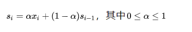

python时间序列预测之Holt-Winters
1. 什么是Holt-Winters
时间序列是非常常见的数据格式，以[时间，观测值]形式表现，如下图。
现实场景中如股票走势图，国家GDP历年数据，机器cpu利用率，内存数据等都是时间序列。对未来时间的观测值进行预测是有意义的工作，提前预知未来的数据的走势，可以提前做出行动，如预测cpu使用率，如果cpu飙高，可以及早进行调整，避免机器负载过高而宕机，这个在AIOPS是很常见的一个应用场景。
今天要说到Holt-Winters是利用三次指数平滑来做时间序列预测的方法。Holt-Winters综合了1957年Holt和1960年Winters两个人的思路的一种方法。
-
一次指数平滑
我们来看下，一次指数平滑如下图：

可知，si表示第i时刻的平滑估计，si可以表示为当前实际值xi和上一时刻平滑估计值得加权组合，权重由alpha来决定。那为什么称为指数平滑呢？我们来把式子展开，如下：

有点类似泰勒展开式的味道

alpha 属于[0, 1], 越大表示近期的数据影响更大
-
二次指数平滑：加上趋势的因素
一次指数平滑，没有考虑时间序列的趋势和季节性，二次指数平滑加上趋势因素。

从公式可知，一个时间序列的时刻值分解为baseline部分和趋势部分，t表示趋势，可以表示为连续两个时刻的差值；可知，ti也是一次的指数平滑。
-
Holt-Winters三次指数平滑： 加上季节性因素在二次指数平滑基础上，考虑季节性因素，就是三次指数平滑，也就是Holt-Winters。
由此，一个时间序列的时刻值分解为baseline部分和趋势部分以及季节部分。由于季节性，存在周期，比如按周，按月等。pi季节性为当前季节性值和上一个周期季节性估计值的加权组合，周期在公式中以k来表示。如下：

2. Holt-Winters的实现
从第一部分可知，要实现Holt-Winters，只要知道：
- 初始值：s0，t0和p0
- 合适的参数：alpha，beta， gamma
- 套入公式即可完成预测
三个重要参数：alpha，beta， gamma都属于[0, 1]之间，要么人为的搜索，要么通过数据来估计，通常采用L-BFGS优化算法来拟合数据。优化算法来自包scipy.optimize的fmin_l_bfgs_b。
from __future__ import division from sys import exit from math import sqrt from numpy import array from scipy.optimize import fmin_l_bfgs_b # 优化算法的loss function，即判断拟合效果，由RMSE MAE等 def RMSE(params, *args): Y = args[0] type = args[1] rmse = 0 alpha, beta, gamma = params m = args[2] a = [sum(Y[0:m]) / float(m)] b = [(sum(Y[m:2 * m]) - sum(Y[0:m])) / m ** 2] if type == 'additive': s = [Y[i] - a[0] for i in range(m)] y = [a[0] + b[0] + s[0]] for i in range(len(Y)): a.append(alpha * (Y[i] - s[i]) + (1 - alpha) * (a[i] + b[i])) b.append(beta * (a[i + 1] - a[i]) + (1 - beta) * b[i]) s.append(gamma * (Y[i] - a[i] - b[i]) + (1 - gamma) * s[i]) y.append(a[i + 1] + b[i + 1] + s[i + 1]) rmse = sqrt(sum([(m - n) ** 2 for m, n in zip(Y, y[:-1])]) / len(Y)) return rmse # 加性的时间序列 def additive(x, m, fc, alpha = None, beta = None, gamma = None): Y = x[:] # 利用fmin_l_bfgs_b来估计参数alpha beta和gamma if (alpha == None or beta == None or gamma == None): initial_values = array([0.3, 0.1, 0.1]) boundaries = [(0, 1), (0, 1), (0, 1)] type = 'additive' parameters = fmin_l_bfgs_b(RMSE, x0 = initial_values, args = (Y, type, m), bounds = boundaries, approx_grad = True) alpha, beta, gamma = parameters[0] # 初始值 a表示baseline， b表示趋势，s表示季节性，y表示预测值， 分别取第一个周期的统计数据为初始值 a = [sum(Y[0:m]) / float(m)] b = [(sum(Y[m:2 * m]) - sum(Y[0:m])) / m ** 2] s = [Y[i] - a[0] for i in range(m)] y = [a[0] + b[0] + s[0]] rmse = 0 # 套用上面公式，从0开始，fc表示预测的数量，如已知前7天，预测接下来的一个小时的数据，如果数据粒度是5分钟，fc为12。 for i in range(len(Y) + fc): if i == len(Y): # 预测值为 Y.append(a[-1] + b[-1] + s[-m]) a.append(alpha * (Y[i] - s[i]) + (1 - alpha) * (a[i] + b[i])) b.append(beta * (a[i + 1] - a[i]) + (1 - beta) * b[i]) s.append(gamma * (Y[i] - a[i] - b[i]) + (1 - gamma) * s[i]) y.append(a[i + 1] + b[i + 1] + s[i + 1]) # 计算rmse值 rmse = sqrt(sum([(m - n) ** 2 for m, n in zip(Y[:-fc], y[:-fc - 1])]) / len(Y[:-fc])) return y[-fc:], alpha, beta, gamma, rmse
另外，statsmodels包中也提供的实现的方法
from statsmodels.tsa.holtwinters import ExponentialSmoothing
3. Holt-Winters参数
从上面实现可知，holt-winters通过预估alpha，beta和gamma来预测。算法的关键就是这三个参数和初始化值。三个参数可以通过优化算法来预估，但有可能并不是最优的。初始值的设置除了上面统计值外，还可以通过时序的分解的趋势和季节部分来初始。
import numpy as np from pandas import read_csv import matplotlib.pyplot as plt from statsmodels.tsa.seasonal import seasonal_decompose decomposition = seasonal_decompose(df_clean.bw, model='additive', period=288) decomposition.plot()

Holt-Winters针对波形比较稳定，没有突刺的情况下，效果会比较好。

对于存在突刺，统一的alpha，beta，gamma不能很好拟合，预测可能会滞后。
4. 总结
本文分享了时间序列预测算法Holt-Winters以及重要参数的选择，希望对你有帮助。总结如下：
Holt-Winters是三次指数平滑，分别为baseline，趋势和季节性；- alpha、beta和gamma分别为baseline，趋势和季节性的指数加权参数，一般通过优化算法L-BFGS估计
- 初始化可通过平均值，也可通过时间序列分解得到
- 周期m或者k的选择要根据实际数据来选择
Holt-Winters针对波形比较稳定，没有突刺的情况下，效果会比较好
5. 参考
-
Holt, C. E. (1957). Forecasting seasonals and trends by exponentially weighted averages (O.N.R. Memorandum No. 52). Carnegie Institute of Technology, Pittsburgh USA. https://doi.org/10.1016/j.ijforecast.2003.09.015
-
Winters, P. R. (1960). Forecasting sales by exponentially weighted moving averages. Management Science, 6, 324–342. https://doi.org/10.1287/mnsc.6.3.324